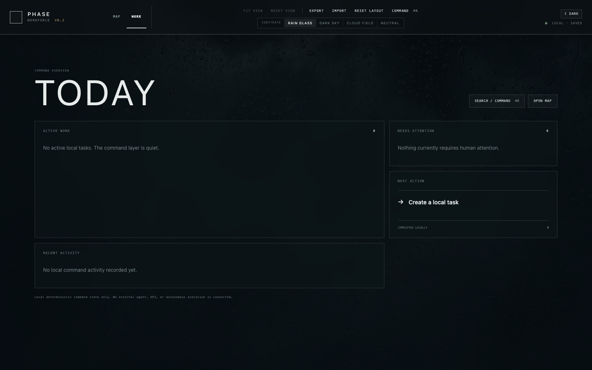

Archive / Local prototype · Not user-tested
PHASE
Workforce.
What if you could see the whole team, human and AI, as a place?
I was building an AI working environment for PHASE, my game project. Chat threads made it hard to see who did what, what was connected, and where a piece of work stood. Workforce started as a spatial map of the people, rooms, agents, tools and workflows behind the project. It grew into a local command interface before I put it in front of users.
Follow the project ↓
01 / The original problem
A map instead of another chat.
In the original brief, the first useful milestone was modest: launch a local app, see the whole human–AI organization on a pannable canvas, arrange it, inspect each part and open existing specialist conversations from its nodes. The aim was to make the system legible before automating it.
The larger vision was a visual workstation: an expandable mind map for structure, a freeform whiteboard for thinking, mood boards for visual reference, and workflows that showed work moving through people and agents. Those were directions to explore, not a single finished feature set. The canvas and structured workflow prototype were built; I have not found evidence that the freeform whiteboard and mood-board surfaces reached comparable working form.
02 / What actually got built
From diagram to local operating surface.
The preserved V0.3 build had a navigable node map, a separate WORK view, a TODAY overview, inspector and command controls, editable spatial layout, and local task/workflow state. The dark rain-glass presentation was an intentional part of the work: a calm, atmospheric interface rather than a generic dashboard.
At V0.3, execution was explicitly a simulation. A task could move through room, supervisor, engineer and reviewer states, but no real agent or API ran. Later preserved source goes further: V0.4 added a bounded local orchestrator and Codex adapter; V0.5 added human review; V0.6A added a disabled-by-default intelligence substrate. That is working development, not proof of a reliable deployed service. The repo still says no paid API, cloud service, autonomous supervisor or game-repository integration.
There were automated checks and local browser/build validation. I have not found a user-testing record, adoption data or evidence of a production launch. “Never reached testing” here means it did not reach real-world product testing, not that nobody ran code checks.

03 / Intended system
The interface was the beginning, not the backend.
- See the organization. Rooms, specialists, tools, workflows and relationships on an infinite canvas, with human control visible in the same picture.
- Think spatially. Rearrange clusters, open details, connect to conversations, and eventually use whiteboard and mood-board surfaces to reason beyond the org chart.
- Direct work. Create tasks, follow handoffs and review outputs from a single operating surface rather than searching several chats.
- Connect real execution carefully. Bring in agent runs, state updates, persistence and limits without mistaking a visual state change for work actually done.
Only parts of that sequence were implemented. The later local execution spine was bounded and review-gated; the richer creative surfaces and a fully connected multi-agent workplace remained aspirations.
04 / The turn
First see what exists. Then decide what to control.
Workforce tried to represent the organization I wanted to direct. Under the hood asks a narrower, testable question about the system already running: when my agent answers, which model, memory, tools and helpers did it actually use? It turns real traces into a visual explanation instead of treating a designed map as proof of live behavior.
That makes Under the hood a continuation of the same visual instinct, not a renamed Workforce build. The former observes real activity; the latter explored a place to arrange and operate future activity. The current visual AI environment research holds the broader ambition.
What carried forward
The useful lesson was not that every system needs a bigger dashboard. A visual interface earns its place when it makes real state easier to understand and decisions easier to make.
See Under the hood →← All AI Labs projects